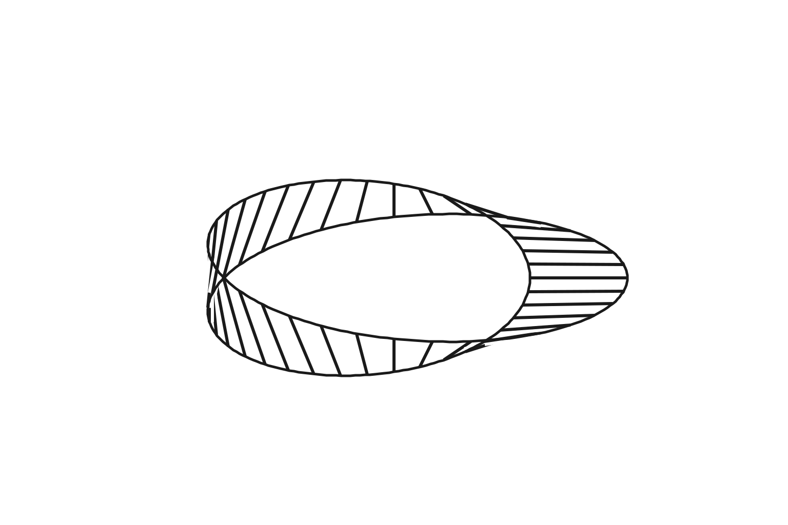
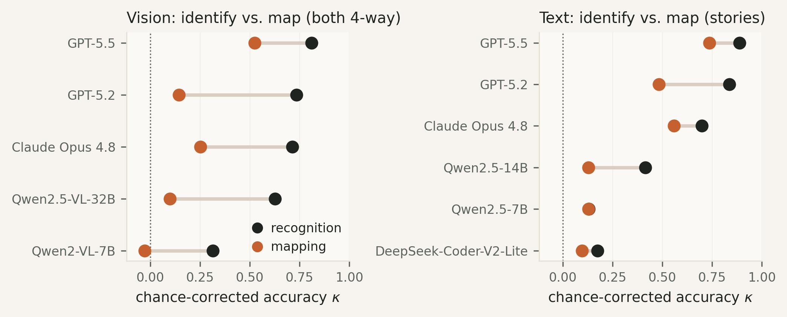
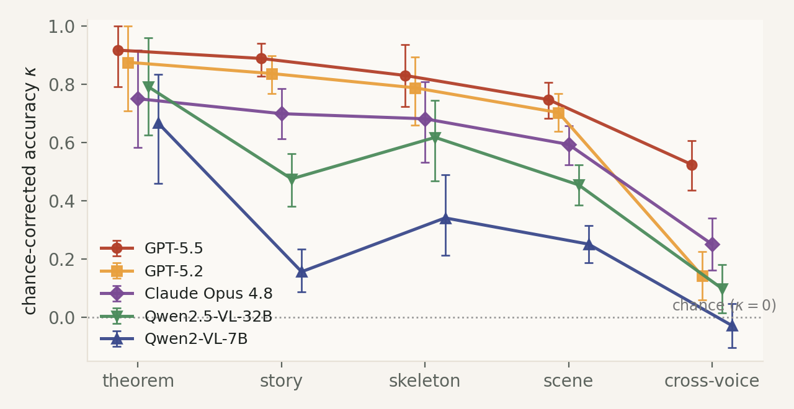

GEB Benchmark
See a scene, grasp a structure.
1Fudan University 2Peking University ∗Corresponding author
A benchmark of abstract structural motifs in the spirit of Gödel, Escher, Bach. The unit of a sample is a structure — self-reference, strange loop, recursion, Möbius, interference — not any particular graph: node counts, depths and angles are nuisance variables, recorded but never scored. Each motif is presented in four voices, and the question is always the same: which structure is this?

skeleton


skeleton


skeleton


skeleton
One recursive-branching skeleton becomes a river delta and a lightning bolt — no pixel in common, one structure. Same for the others above.
frameworkThe cross-modal category
The benchmark is organized by a cross-modal category whose objects are abstract structural motifs and whose morphisms are structure-preserving edits. The tasks are the natural questions about that category.
Definition 1 (the cross-modal category).
The motif category $\mathcal{M}$ has the 25 motifs $m_1,\ldots,m_{25}$ as objects and structural transformations $f : m \to m'$ (nesting deepened into recursion, a symmetry broken, a loop closed into a cycle) as morphisms. Each voice $v \in \{S,T,H,K\}$ (Scene, Story, Theorem, Skeleton) is a realization functor into its category of artifacts — photographs whose composition enacts the motif, narratives under a checkable form device, name-masked mathematical statements, labelled graphs:
$$F_v : \mathcal{M} \to \mathcal{A}_v, \qquad F_v(\mathrm{id}_m)=\mathrm{id}_{F_v(m)}, \qquad F_v(g \circ f)=F_v(g)\circ F_v(f). \tag{1}$$
$F_K$, which hands the model the structure literally as a graph, is the most faithful of the four.
Definition 2 (tasks).
Identification for voice $v$ presents $F_v(m)$ and asks for $m$: an approximate right inverse
$$R_v \circ F_v \;\approx\; \mathrm{id}_{\mathcal{M}}. \tag{2}$$
Cross-voice matching presents $F_u(m)$ and asks for $F_v(m)$ among four candidates: the composite $F_v \circ R_u$. The mapping tax is the empirical gap between the two. At the morphism layer, the model is given $F_u(f)$ and $F_v(m)$ and must produce $F_v(m')$; the functors are natural iff, for every $f : m \to m'$,
$$\eta_{m'} \circ F_u(f) \;=\; F_v(f) \circ \eta_m, \tag{3}$$
and the task tests whether a model witnesses this square. $F_K$ being most faithful makes $R_K$ the easiest right inverse, so skeleton identification is the recognition ceiling.
Every item is a multiple-choice question with a single ground-truth answer, so scoring is judge-free exact match and fully reproducible. Chance is $1/25 = 4\%$ on the 25-way identification tasks and $1/4 = 25\%$ on the four-way matching and adversarial tasks. Node counts, depths and angles are nuisance variables — recorded, never scored.
library25 motifs in seven groups
The motifs were chosen not to tile a taxonomy but to be exquisite — each a recognizable shape of thought in the spirit of Gödel, Escher, Bach, from the self-referential fixed point to the tangled hierarchy of a strange loop. Each motif is fixed by a single crisp invariant — the property a system must recognize — and realized in the four voices. The grouping below is a reading aid; the scored unit is always the single motif and its invariant.
examplesThe story voice: form devices you can check
The story voice is the library's most GEB-like component: the motif lives not in what the tale says but in how it is told, through a form device that a program can verify without judgment calls. Three items from the released dataset, verbatim:
Device. Three narration blocks climb a hierarchy of tellers — A narrates B, B narrates C — and the third block hands the protagonist role back to A, returning to the opening statement while keeping the level-by-level nesting: a tangled hierarchy in six lines.
Device. The paragraphs form a closed ring: each paragraph's last sentence is, word for word, the next paragraph's first, and the last paragraph closes back onto the first. The checker verifies $R_1{=}E_2$, $R_2{=}E_3$, $R_3{=}E_1$ mechanically.
Device. One lap of four sentences, then the same lap with every orientation word swapped — left/right, above/below, inside/outside — and only the ninth sentence restores the first exactly: one traversal flips orientation, two restore it, which is precisely the Möbius invariant.
For self-reference the device is an acrostic fixed point: the title asserts “the first characters of this piece's sentences, read in order, spell exactly this title,” and the checker confirms that the title's claim is precisely the fact just verified — a single-layer constructible fixed point, with no climb through narrative levels (which would be a strange loop) and no second system being described (which would be an isomorphism).
The theorem voice: real theorems, name-masked
Each motif also carries one true, attributed theorem, presented with its identifying names masked so the structure must be read, not recalled. The self-reference entry, verbatim:
Masked. Recursion · outputs its own source code · quine. The invariant: the object contains a sentence describing itself, and the description checks out verbatim — it points back to itself in one step, with no climb through levels and no second system.
resultsReading structure, and failing to carry it
Frontier models can recognize an abstract structure in any single voice, yet fail — systematically — to carry it from one voice to another. The failure is lawful, not random.
1 Recognition is not mapping
On the very same scenes, at the very same 4-way odds, identifying the structure beats carrying it across voices by 17–42 points.
Our adversarial split asks a model to pick a scene's motif from its three nearest confusables (4-way). A separate task asks it to match the same scene to the one story (of four) that shares its structure — same odds, same images. Every model does far better at the first: GPT-5.5 86% → 69%, Claude Opus 4.8 81% → 42% (exact McNemar p≤2.8×10-7 for every vision model). The bottleneck is not fine discrimination; it is cross-voice transport.

2 Scale feeds recognition, not mapping
Growing a model 7B → 14B lifts recognition by +27 points and moves mapping by exactly zero.
In the Qwen2.5 family, story → motif identification climbs 16.5% → 43.8% (p = 2×10-9), while story → theorem matching stays pinned at 34.7% → 34.7% (14 items flip each way; p = 1.0). A bigger model reads structure better and transports it no better at all.
3 Errors live in conceptual geometry
When a model is wrong, it is wrong toward the formally-nearest motif 2.2× more often than chance.
Across 1,450 identification errors, 45% land on a designed nearest-neighbor motif (chance 20.6%; permutation p < 10-4). An independently derived graph-edit distance — read straight off the released skeleton programs, never used to build the benchmark — reproduces the same concentration. Three perceptual embeddings (DINOv2, CLIP, SigLIP) do not explain it: errors track the designed formal geometry more than any measured perceptual one.
4 A voice gradient
Structure is easiest stated as a theorem, hardest carried across voices — a clean ordering once you correct for chance.
Because the tasks differ in difficulty floor (25-way vs 4-way), we score every cell as κ = (acc − chance)/(1 − chance). Pooled over the four proprietary frontier models, κ falls monotonically: theorem 0.86 > story 0.85 > skeleton 0.79 > scene 0.72 > cross-voice 0.44. Cross-voice is the lowest for every one of the eight vision models in ≥99.5% of bootstrap resamples.

5 Different models fall into the same traps
When two frontier models miss the same item, they pick the same wrong motif up to 80% of the time.
GPT-5.5 and Gemini 3.1 Pro — different vendors, different training data — converge on the same conceptual confusions on the same stimuli. The hard boundaries are properties of the structures, not quirks of one model — which is what a benchmark should measure.
6 Structure survives translation
The same stories in English and Chinese score identically (81.3% each), and when models err in both languages they err toward the same motif far above chance.
What the benchmark probes is structural, not lexical: the shape, not the words that carry it. This is why the dataset is English-primary with a Chinese mirror rather than tied to either language.
error analysisThe hardest motifs
Pooled recall is lowest on the motifs at the conceptual core of GEB — figure ground (23%), contraction fixed point (32%), self reference (34%), projective duality (35%), nesting (41%). Strikingly, these are also the structures the image generator itself could least often render faithfully (rank correlation ρ = −0.45): the strange loops and figure–grounds that are hard to draw are hard to read.
resourcesDataset & code
All 1,156 items, the 25-motif library (real theorems + form devices), the generation and evaluation harness, and the analysis scripts are open. Code is MIT; the dataset is CC-BY-4.0.
github.com/tongmd/GEB-benchmark
morphism layerFunctorial abstraction
A categorical pilot, now a section of the paper: can a model apply a structural change (BEFORE→AFTER) to the same structure told in another voice? Models that reliably detect the change transport it far better in the theorem voice than in the story voice, where four of six models fall to chance — the mapping tax, lifted from objects to morphisms. All arms run through a single unified inference API at a pinned model version. See the five task types & live examples →
citationBibTeX
@misc{zhang2026gebbench,
title = {GEB-Bench: Abstract Structures Told in Many Voices},
author = {Zhang, Tong and Shi, Zhiyuan and Peng, Yun and Xie, Tao},
year = {2026},
eprint = {2608.04111},
archivePrefix = {arXiv},
primaryClass = {cs.CV},
url = {https://arxiv.org/abs/2608.04111}
}